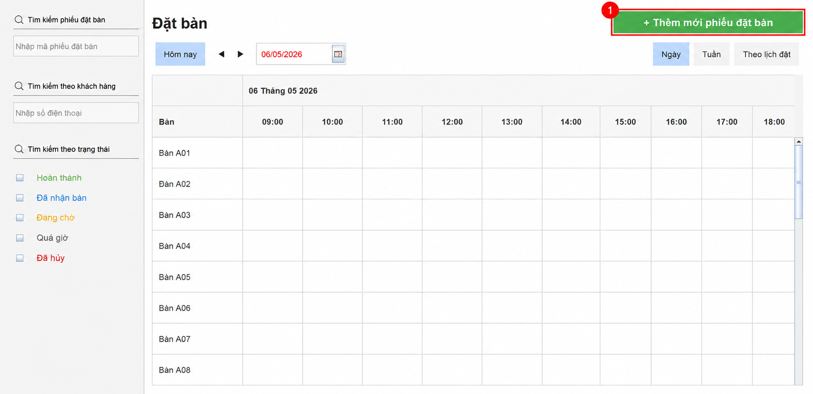
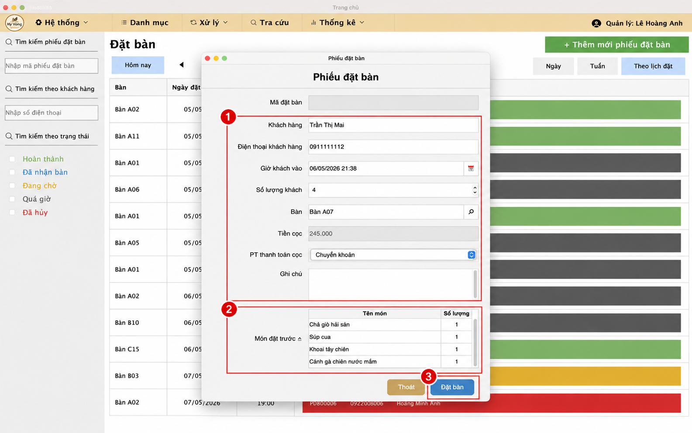
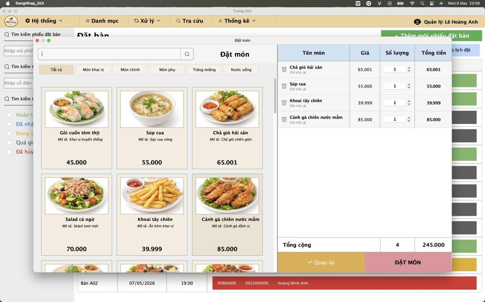
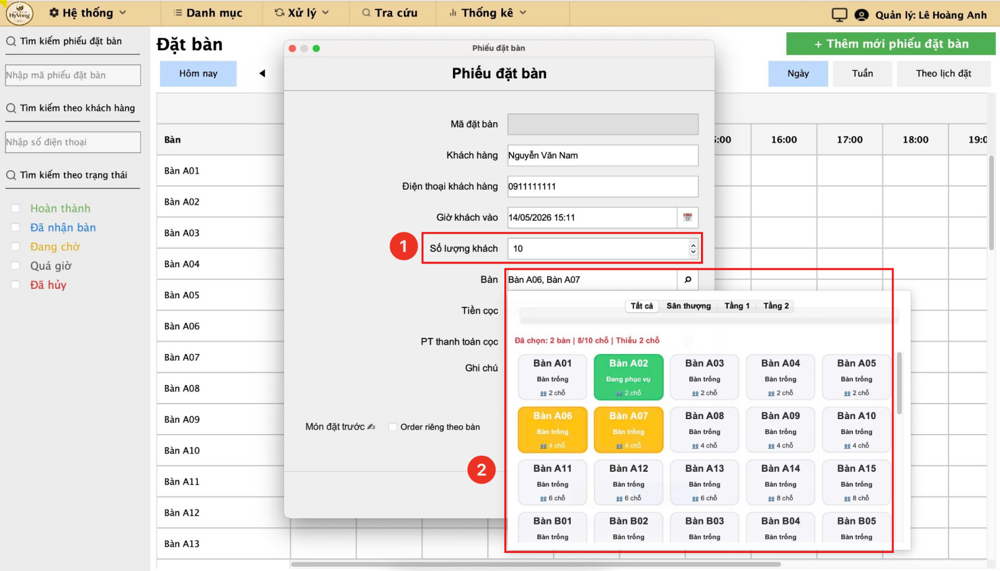
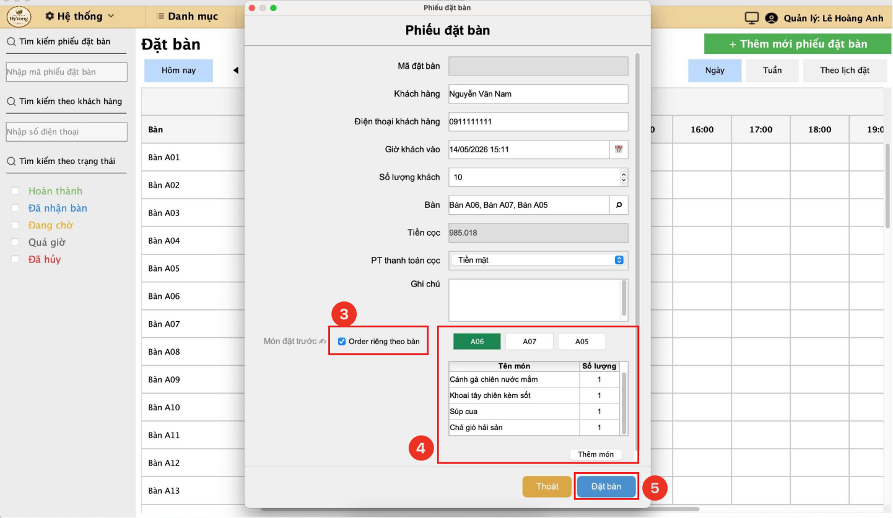
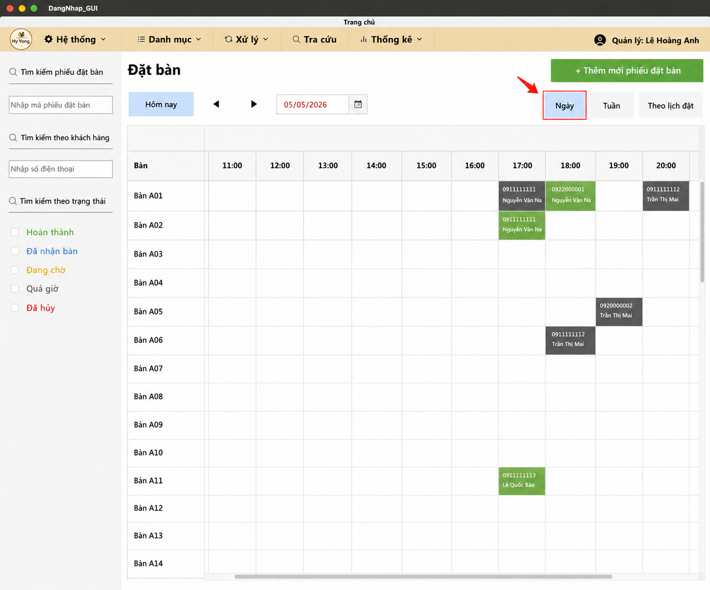
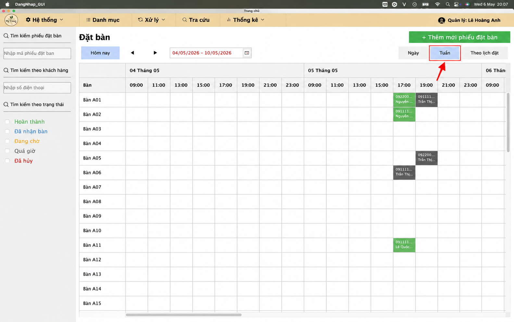
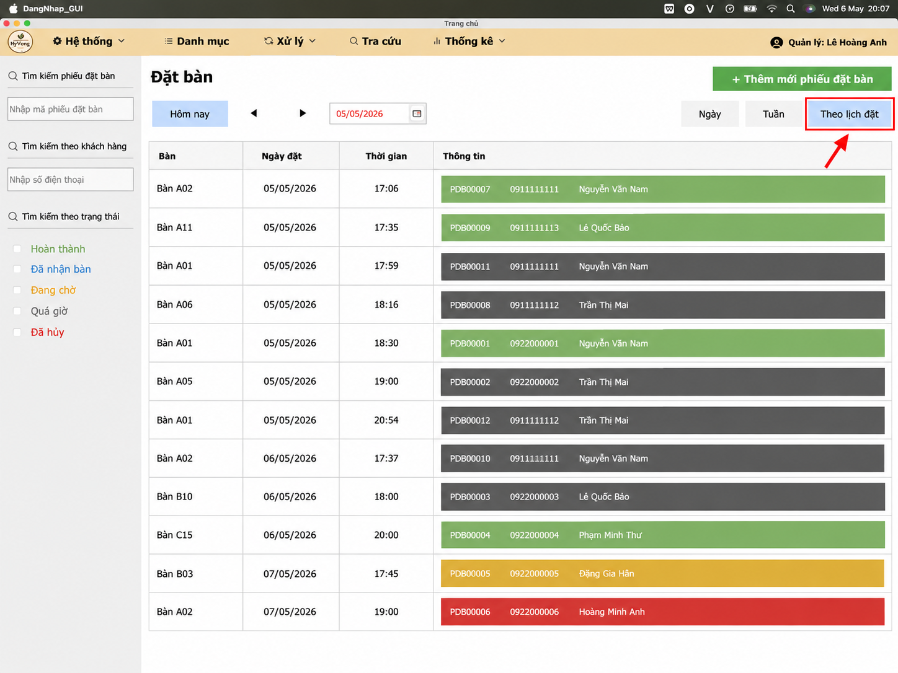

add_circle Mở phiếu đặt bàn mới
Tại giao diện chính, nhấn nút "+ Thêm mới phiếu đặt bàn" ở góc trên bên phải để bắt đầu quy trình.

edit_note Điền thông tin khách hàng và hoàn tất phiếu đặt bàn
- nhập đầy đủ thông tin: tên khách, số điện thoại, số lượng người và chọn bàn tương ứng.
- Nhấn thêm món đặt trước nếu khách hàng yêu cầu.
- Kiểm tra lại thông tin và nhấn nút "Đặt bàn" màu xanh dương để hoàn tất quy trình.

restaurant_menu Chọn thực đơn đặt trước
Nếu khách yêu cầu, nhấn vào nút Món đặt trước để mở màn hình thực đơn.
- Chọn món từ danh sách bên trái để thêm vào hóa đơn tạm bên phải.
- Nhấn nút "Đặt món" để lưu danh sách thực đơn vào phiếu.

group Đặt bàn cho NHIỀU KHÁCH
Chức năng này dùng khi khách đi theo nhóm đông, cần chọn nhiều bàn liền nhau hoặc ghép các bàn phù hợp với số lượng người.
- Nhập số lượng khách trong phiếu đặt bàn để hệ thống tính số chỗ cần dùng.
- Nhấn vào nút chọn bàn để mở màn hình danh sách bàn và bắt đầu chọn các bàncó màu XÁM-(bàn trống) hoặc các bàn phù hợp với sức chứa, hệ thống sẽ tô nổi bật những bàn đã chọn..

- Có thể Tích chọn Order Theo Bàn Riêng, gọi món cho từng bàn
- Kiểm tra lại thông tin hiển thị như đã chọn bao nhiêu bàn, tổng số chỗ và số món đặt trước nếu có.
- Nhấn nút "Đặt bàn" để hoàn tất, hoặc chọn lại bàn nếu cần điều chỉnh trước khi lưu phiếu.

event_note Theo dõi đặt bàn
Chức năng này giúp theo dõi nhanh các phiếu đặt bàn theo từng kiểu hiển thị khác nhau để quản lý dễ hơn.
a. Theo dõi theo ngày

b. Theo dõi theo tuần

c. Theo dõi theo danh sách đặt
